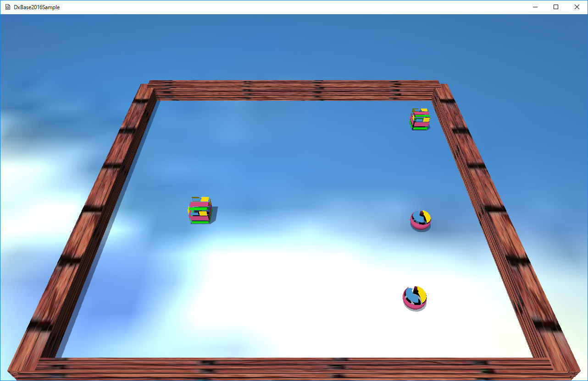

図0005a
今回作成するクラスは、MoveObjectクラスです。Character.hとCharacter.cppに記述があります。
//--------------------------------------------------------------------------------------
// class MoveObject : public GameObject;
// 用途: 動くオブジェクト
//--------------------------------------------------------------------------------------
class MoveObject : public GameObject{
public:
//構築と破棄
MoveObject(const shared_ptr<Stage>& StagePtr);
virtual ~MoveObject();
virtual void OnCreate() override{}
//初期化
void OnCreateWithParam(const Vector3& StartPos,
const Vector3& StartVelocity, bool Type);
//ターンの最終更新時
virtual void OnLastUpdate() override;
};
//初期化
void OnCreateWithParam(const Vector3& StartPos,
const Vector3& StartVelocity, bool Type);
//初期化
void MoveObject::OnCreateWithParam(const Vector3& StartPos,
const Vector3& StartVelocity, bool Type){
auto PtrTransform = AddComponent<Transform>();
PtrTransform->SetScale(1.0f, 1.0f, 1.0f);
PtrTransform->SetRotation(0.0f, 0.0f, 0.0f);
PtrTransform->SetPosition(StartPos);
if (Type){
//Sphereの衝突判定をつける
auto PtrSphere = AddComponent<CollisionSphere>();
}
else{
//OBBの衝突判定をつける
auto PtrObb = AddComponent<CollisionObb>();
}
//物理計算をつける
auto PtrRigit = AddComponent<Rigidbody>();
PtrRigit->SetVelocity(StartVelocity);
//影をつける
auto ShadowPtr = AddComponent<Shadowmap>();
if (Type){
ShadowPtr->SetMeshResource(L"DEFAULT_SPHERE");
}
else{
ShadowPtr->SetMeshResource(L"DEFAULT_CUBE");
}
//描画コンポーネント
auto PtrDraw = AddComponent<PNTStaticDraw>();
if (Type){
PtrDraw->SetMeshResource(L"DEFAULT_SPHERE");
}
else{
PtrDraw->SetMeshResource(L"DEFAULT_CUBE");
}
PtrDraw->SetTextureResource(L"TRACE_TX");
//透明有効
SetAlphaActive(true);
}
//物理計算をつける
auto PtrRigit = AddComponent<Rigidbody>();
PtrRigit->SetVelocity(StartVelocity);
//更新
void MoveObject::OnLastUpdate(){
auto PtrRigit = GetComponent<Rigidbody>();
auto Velo = PtrRigit->GetVelocity();
//自動反発で速度yが０以外になる場合があるので調整
Velo.y = 0;
PtrRigit->SetVelocity(Velo);
}
//初期化
void FixedBox::OnCreateWithParam(const Vector3& Scale,
const Vector3& Rotation,const Vector3& Position){
auto PtrTransform = AddComponent<Transform>();
PtrTransform->SetScale(Scale);
PtrTransform->SetRotation(Rotation);
PtrTransform->SetPosition(Position);
auto PtrRegid = AddComponent<Rigidbody>();
auto PtrObb = AddComponent<CollisionObb>();
PtrObb->SetFixed(true);
//影をつける
auto ShadowPtr = AddComponent<Shadowmap>();
ShadowPtr->SetMeshResource(L"DEFAULT_CUBE");
auto PtrDraw = AddComponent<PNTStaticDraw>();
PtrDraw->SetMeshResource(L"DEFAULT_CUBE");
PtrDraw->SetTextureResource(L"WALL_TX");
PtrDraw->SetOwnShadowActive(true);
}
PtrObb->SetFixed(true);
//固定のボックスの作成
void GameStage::CreateFixedBox(){
//配列の初期化
vector< vector<Vector3> > Vec = {
{
Vector3(20.0f, 1.0f, 1.0f),
Vector3(0.0f, 0.0f, 0.0f),
Vector3(0.0f, 0.5f, 10.0f)
},
{
Vector3(20.0f, 1.0f, 1.0f),
Vector3(0.0f, 0.0f, 0.0f),
Vector3(0.0f, 0.5f, -10.0f)
},
{
Vector3(1.0f, 1.0f, 20.0f),
Vector3(0, 0, 0),
Vector3(10.0f, 0.5f, 0.0f)
},
{
Vector3(1.0f, 1.0f, 20.0f),
Vector3(0, 0, 0),
Vector3(-10.0f, 0.5f, 0.0f)
},
};
//オブジェクトの作成
for (auto v : Vec){
AddGameObjectWithParam<FixedBox>(v[0], v[1], v[2]);
}
}
//動くオブジェクトの作成
void GameStage::CreateMoveObject(){
AddGameObjectWithParam<MoveObject>(Vector3(-8.0f, 0.5, 0),
Vector3(7.0f, 0.0, 7.0f), true);
AddGameObjectWithParam<MoveObject>(Vector3(0.0f, 0.5, 0),
Vector3(-5.0f, 0.0, 6.0f), false);
AddGameObjectWithParam<MoveObject>(Vector3(8.0f, 0.5, 0),
Vector3(-7.0f, 0.0, 6.0f), true);
AddGameObjectWithParam<MoveObject>(Vector3(0.0f, 0.5, 2.0f),
Vector3(6.0f, 0.0, 5.0f), false);
}
//初期化
void GameStage::OnCreate(){
try{
//リソースの作成
CreateResourses();
//ビュー類を作成する
CreateViews();
//プレートを作成する
CreatePlate();
//固定ボックスの作成
CreateFixedBox();
//動くオブジェクトの作成
CreateMoveObject();
}
catch (...){
throw;
}
}